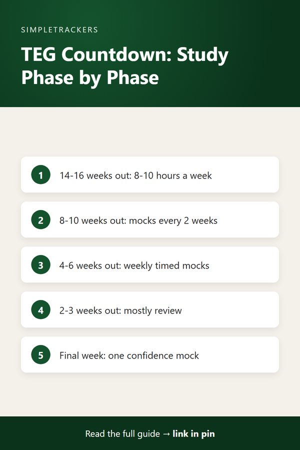

<!doctype html>
<html lang="en">
<head>
<script async src="https://pagead2.googlesyndication.com/pagead/js/adsbygoogle.js?client=ca-pub-7383810158576704" crossorigin="anonymous"></script>
<meta charset="utf-8">
<title>TEG Exam Prep: Using Your Tracker to Manage Readiness and Countdown</title>
<meta name="viewport" content="width=device-width, initial-scale=1">
<meta name="description" content="Preparing for the TEG Irish exam? Use a study tracker to measure readiness across skills and plan your countdown to exam day.">
<link rel="canonical" href="https://ghengoy.github.io/gaeilge-tracker/teg-exam-prep-tracking-your-readiness.html">
<meta property="og:type" content="article">
<meta property="og:title" content="TEG Exam Prep: Using Your Tracker to Manage Readiness and Countdown">
<meta property="og:description" content="Preparing for the TEG Irish exam? Use a study tracker to measure readiness across skills and plan your countdown to exam day.">
<meta property="og:url" content="https://ghengoy.github.io/gaeilge-tracker/teg-exam-prep-tracking-your-readiness.html">
<meta property="og:image" content="https://ghengoy.github.io/gaeilge-tracker/images/hero/teg-exam-prep-tracking-your-readiness.jpg">
<meta name="p:domain_verify" content="ed2ca7fb71cecfffeba5d895002ee1d1"/>
<script data-goatcounter="https://ghengoy.goatcounter.com/count" async src="//gc.zgo.at/count.js"></script>
<style>
  :root { --accent: #14532D; --accent-dark: #0B331C; --tint: #E8F2EC; --ink: #1f2328; --muted: #5d6470;
          --line: #e4e1da; --paper: #fbfaf7; --card: #ffffff; }
  * { box-sizing: border-box; }
  body { margin: 0; background: var(--paper); color: var(--ink); font-family: -apple-system, BlinkMacSystemFont, "Segoe UI", Roboto, "Helvetica Neue", Arial, sans-serif;
         font-size: 18px; line-height: 1.75; -webkit-font-smoothing: antialiased; }
  a { color: var(--accent); text-underline-offset: 3px; }
  a:hover { color: var(--accent-dark); }
  img { max-width: 100%; height: auto; }
  .site-header { background: var(--card); border-bottom: 1px solid var(--line); }
  .site-header .inner { max-width: 760px; margin: 0 auto; padding: 14px 20px; display: flex; align-items: center; justify-content: space-between; gap: 16px; flex-wrap: wrap; }
  .brand { font-weight: 700; color: var(--ink); text-decoration: none; font-size: 17px; display: flex; align-items: center; gap: 10px; }
  .brand-mark { width: 28px; height: 28px; border-radius: 8px; background: var(--accent); display: inline-block; position: relative; }
  .brand-mark::after { content: ""; position: absolute; left: 7px; top: 8px; width: 14px; height: 3px; background: #fff; border-radius: 2px;
                       box-shadow: 0 5px 0 #fff, 0 10px 0 rgba(255,255,255,.6); }
  .site-header nav { display: flex; gap: 18px; font-size: 15px; }
  .site-header nav a { color: var(--muted); text-decoration: none; }
  .site-header nav a:hover { color: var(--accent); }
  main { max-width: 760px; margin: 0 auto; padding: 32px 20px 56px; }
  article > h1, main > h1 { font-size: clamp(30px, 5vw, 42px); line-height: 1.2; letter-spacing: -0.02em; margin: 8px 0 12px; }
  h2 { font-size: 27px; line-height: 1.3; letter-spacing: -0.01em; margin: 52px 0 14px; padding-top: 6px; scroll-margin-top: 16px; }
  h3 { font-size: 21px; line-height: 1.35; margin: 32px 0 8px; }
  p { margin: 0 0 20px; }
  ul, ol { padding-left: 1.3em; margin: 0 0 22px; }
  li { margin-bottom: 8px; }
  li::marker { color: var(--accent); }
  strong { font-weight: 650; }
  .pillar-link { font-size: 15px; margin: 0 0 4px; }
  .pillar-link a { text-decoration: none; }
  .post-meta { color: var(--muted); font-size: 15px; margin: 0 0 24px; }
  .post-hero { margin: 0 0 28px; }
  .post-hero img { width: 100%; aspect-ratio: 16 / 9; object-fit: cover; border-radius: 14px; display: block; background: var(--tint); }
  figcaption { font-size: 13px; color: var(--muted); margin-top: 8px; line-height: 1.5; }
  figcaption a { color: var(--muted); }
  .toc { background: var(--card); border: 1px solid var(--line); border-radius: 12px; padding: 18px 22px 8px; margin: 0 0 32px; font-size: 16px; }
  .toc-title { font-weight: 700; margin: 0 0 8px; font-size: 14px; letter-spacing: .06em; text-transform: uppercase; color: var(--muted); }
  .toc ol { margin: 0 0 10px; }
  .toc li { margin-bottom: 4px; }
  .toc a { text-decoration: none; }
  .key-takeaways, .callout { border-radius: 12px; padding: 20px 24px 6px; margin: 0 0 30px; }
  .key-takeaways { background: var(--tint); border-left: 5px solid var(--accent); }
  .key-takeaways ul { margin-bottom: 14px; }
  .box-title { font-weight: 700; margin: 0 0 8px; font-size: 14px; letter-spacing: .06em; text-transform: uppercase; color: var(--accent-dark); }
  .callout { background: var(--card); border: 1px solid var(--line); border-left: 5px solid var(--accent); }
  .callout.note { border-left-color: #b7791f; }
  .callout.note .box-title { color: #8a5a12; }
  .steps { list-style: none; counter-reset: step; padding-left: 0; }
  .steps > li { counter-increment: step; position: relative; padding-left: 52px; margin-bottom: 18px; }
  .steps > li::before { content: counter(step); position: absolute; left: 0; top: 0; width: 34px; height: 34px; border-radius: 50%;
                        background: var(--accent); color: #fff; font-weight: 700; font-size: 16px; display: flex; align-items: center; justify-content: center; }
  .table-wrap { overflow-x: auto; margin: 0 0 28px; border: 1px solid var(--line); border-radius: 12px; background: var(--card); }
  table { border-collapse: collapse; width: 100%; font-size: 16px; line-height: 1.5; }
  th, td { text-align: left; padding: 12px 16px; border-bottom: 1px solid var(--line); vertical-align: top; }
  th { background: var(--tint); color: var(--accent-dark); font-weight: 700; }
  tr:last-child td { border-bottom: 0; }
  .pin-figure { margin: 36px auto; max-width: 400px; text-align: center; }
  .pin-figure img { border-radius: 12px; box-shadow: 0 10px 30px rgba(0,0,0,.12); display: block; }
  blockquote { margin: 0 0 24px; padding: 4px 0 4px 20px; border-left: 3px solid var(--line); color: var(--muted); font-style: italic; }
  .post-cta { display: flex; gap: 24px; align-items: center; background: var(--card); border: 1px solid var(--line); border-top: 5px solid var(--accent);
              border-radius: 14px; padding: 24px; margin: 48px 0 8px; }
  .post-cta img { width: 150px; border-radius: 10px; flex-shrink: 0; }
  .post-cta h3 { margin: 2px 0 6px; }
  .post-cta p { margin-bottom: 12px; font-size: 16px; }
  .cta-kicker { font-size: 13px !important; letter-spacing: .06em; text-transform: uppercase; color: var(--muted); margin: 0 !important; }
  .buy-button { display: inline-block; background: var(--accent); color: #fff !important; padding: 12px 22px; border-radius: 10px; text-decoration: none; font-weight: 700; font-size: 16px; }
  .buy-button:hover { background: var(--accent-dark); }
  .product-box { background: var(--card); border: 1px solid var(--line); border-radius: 14px; padding: 24px; margin: 24px 0 36px; display: grid; grid-template-columns: 200px 1fr; gap: 0 24px; align-items: center; }
  .product-box img { width: 200px; border-radius: 10px; grid-row: span 3; }
  .product-box h3 { margin: 0 0 6px; }
  .product-box p { margin-bottom: 12px; font-size: 16px; }
  .product-grid { display: grid; grid-template-columns: repeat(auto-fill, minmax(160px, 1fr)); gap: 16px; margin: 12px 0 36px; }
  .product-card { display: flex; flex-direction: column; gap: 4px; background: var(--card); border: 1px solid var(--line); border-radius: 12px; padding: 12px; color: var(--ink); text-decoration: none; font-size: 15px; line-height: 1.4; }
  .product-card:hover { border-color: var(--accent); }
  .product-card img { width: 100%; border-radius: 8px; margin-bottom: 4px; }
  .product-card span { color: var(--muted); }
  .product-card .price { color: var(--accent); font-weight: 700; }
  .post-list { list-style: none; padding: 0; display: grid; gap: 16px; }
  .post-list li { margin: 0; }
  .post-card { display: flex; gap: 18px; background: var(--card); border: 1px solid var(--line); border-radius: 14px; overflow: hidden; color: var(--ink); text-decoration: none; }
  .post-card:hover { border-color: var(--accent); }
  .post-card img { width: 200px; object-fit: cover; flex-shrink: 0; background: var(--tint); }
  .post-card-text { display: flex; flex-direction: column; gap: 6px; padding: 16px 18px 16px 0; }
  .post-card-text strong { font-size: 19px; line-height: 1.35; }
  .post-card-desc { color: var(--muted); font-size: 15px; line-height: 1.55; }
  .post-card-date { color: var(--muted); font-size: 13px; }
  .site-footer { border-top: 1px solid var(--line); background: var(--card); color: var(--muted); font-size: 15px; }
  .site-footer .inner { max-width: 760px; margin: 0 auto; padding: 28px 20px; display: flex; justify-content: space-between; gap: 16px; flex-wrap: wrap; }
  .site-footer p { margin: 0; }
  @media (max-width: 600px) {
    body { font-size: 17px; }
    h2 { font-size: 23px; margin-top: 40px; }
    .post-cta, .post-card { flex-direction: column; }
    .post-cta img { width: 120px; }
    .post-card img { width: 100%; aspect-ratio: 16 / 9; }
    .post-card-text { padding: 0 16p
<header class="site-header"><div class="inner">
<a class="brand" href="index.html"><span class="brand-mark" aria-hidden="true"></span>Irish Self-Study</a>
<nav><a href="index.html">Guides</a><a href="pillar-guide.html">Start here</a></nav>
</div></header>
<main>
<article>
<h1>TEG Exam Prep: Using Your Tracker to Manage Readiness and Countdown</h1>
<p class="pillar-link"><a href="pillar-guide.html">&larr; Back to the Complete Irish Gaelic Study Guide</a></p>
<p class="post-meta"><time datetime="2026-08-10">August 10, 2026</time> &middot; 6 min read</p>
<figure class="post-hero"><figcaption>Photo: <a href="https://www.flickr.com/photos/8715708@N03/850106106" rel="nofollow">WireLizard</a>, <a href="https://creativecommons.org/licenses/by/2.0/" rel="license nofollow">CC BY 2.0</a></figcaption></figure>
<div class="key-takeaways">
<p class="box-title">Key takeaways</p>
<ul>
<li><strong>Know the exam:</strong> TEG has six CEFR-aligned levels (A1-C2), runs twice yearly, and tests listening, reading, writing and speaking separately.</li>
<li><strong>Replace guesswork with evidence:</strong> log your target level and section, mock exam scores, days to exam and target percentage.</li>
<li><strong>Read the trend:</strong> rising mock scores mean keep going, a plateau means change something, a decline is an alarm bell.</li>
<li><strong>Follow a countdown:</strong> build from 14-16 weeks out, focus on weak sections, practise heavily, refine, then maintain confidence in the final week.</li>
</ul>
</div>
<nav class="toc" aria-label="Contents"><p class="toc-title">In this guide</p>
<ol>
<li><a href="#the-teg-exam-structure-and-stakes">The TEG Exam: Structure and Stakes</a></li>
<li><a href="#the-problem-guesswork-about-readiness">The Problem: Guesswork About Readiness</a></li>
<li><a href="#using-the-tracker-to-manage-teg-prep">Using the Tracker to Manage TEG Prep</a></li>
<li><a href="#sample-teg-prep-timeline">Sample TEG Prep Timeline</a></li>
<li><a href="#real-time-adjustments-based-on-tracker-data">Real-Time Adjustments Based on Tracker Data</a></li>
<li><a href="#psychological-benefits-of-tracking">Psychological Benefits of Tracking</a></li>
<li><a href="#start-now">Start Now</a></li>
</ol></nav>
<h2 id="the-teg-exam-structure-and-stakes">The TEG Exam: Structure and Stakes</h2>
<p>The Teastas Eorpach na Gaeilge (TEG, or European Qualification in Irish) is a formal certification of Irish language proficiency recognized across Europe.</p>
<ul>
<li><strong>Levels:</strong> six, aligned to the CEFR (Common European Framework of Reference): A1, A2, B1, B2, C1, and C2.</li>
<li><strong>Timing:</strong> the exam is held twice yearly.</li>
<li><strong>Components:</strong> separate sections for listening, reading, writing, and speaking.</li>
<li><strong>Value:</strong> for learners serious about demonstrating proficiency in Irish, TEG certification carries weight in employment, education, and cultural contexts.</li>
</ul>
<p>If you're planning to sit the TEG exam, you face a different study challenge than casual learners. You need to know:</p>
<ul>
<li>Not just that you're learning Irish, but whether you're on track to reach your target level by exam day.</li>
<li>Which components are your weakness and demand focused attention.</li>
<li>That your mock exam scores are trending upward, not downward.</li>
</ul>
<p>And as the exam date approaches, you need to manage intensity strategically.</p>

<h2 id="the-problem-guesswork-about-readiness">The Problem: Guesswork About Readiness</h2>
<p>Without tracking, TEG prep becomes an anxiety-filled guessing game. You study for weeks, thinking "I should be ready," but you have no objective measure of whether you actually are.</p>
<p>You take a mock exam and score 65%, but you don't know whether that's trending up or down compared to last month. You don't know which sections to focus on in your final weeks. You can't separate what you've actually learned from what you think you've learned.</p>
<div class="callout note">
<p class="box-title">How uncertainty wastes study time</p>
<ul>
<li>You might over-prepare areas where you're already strong, wasting precious time.</li>
<li>You might under-prepare weak areas because they feel too hard.</li>
<li>You might repeat the same study material for months because you don't realize you've already mastered it.</li>
</ul>
<p>All the while, your exam date is approaching and your actual readiness level remains invisible.</p>
</div>

<h2 id="using-the-tracker-to-manage-teg-prep">Using the Tracker to Manage TEG Prep</h2>
<p>A tracker transforms TEG prep from guesswork to evidence-based preparation. Here's how the exam-specific fields work together:</p>
<ul>
<li><strong>Target Level and Target Section.</strong> Knowing your target level (A1-C2) and which exam component you're focusing on that day shapes what you study. If you're targeting B1 and your weak area is writing, you might spend focused time on past tense formation and complex sentence construction. Logging this daily reminds you of your specific goal and prevents aimless studying.</li>
<li><strong>Mock Exam Scores.</strong> As you work through past papers or practice exams, log your scores. Over time, you'll see a trend, and this data is invaluable.</li>
<li><strong>Days to Exam.</strong> This column keeps the countdown real and tells you which mode you should be in.</li>
<li><strong>Target Completion Percentage.</strong> Set a realistic target and use your mock exam scores to refine it as you approach the exam date.</li>
</ul>

<h3>Reading your mock score trend</h3>
<div class="table-wrap">
<table>
<thead><tr><th>Trend</th><th>What it means</th></tr></thead>
<tbody>
<tr><td>Improving</td><td>Your study approach is working; keep doing it.</td></tr>
<tr><td>Plateauing</td><td>You need to change something.</td></tr>
<tr><td>Declining</td><td>An alarm bell that demands immediate attention.</td></tr>
</tbody>
</table>
</div>

<h3>Reading the countdown</h3>
<ul>
<li><strong>120 days to exam:</strong> study-building phase. You can experiment, take risks with new materials, and consolidate foundational skills.</li>
<li><strong>30 days to exam:</strong> shift to high-intensity practice and mock exams.</li>
<li><strong>5 days to exam:</strong> confidence-maintenance mode. Review weak areas but don't learn new material.</li>
</ul>

<h3>Setting a target percentage</h3>
<div class="table-wrap">
<table>
<thead><tr><th>Level</th><th>Realistic target</th></tr></thead>
<tbody>
<tr><td>A1-A2</td><td>70% of marks</td></tr>
<tr><td>B1-B2</td><td>75%</td></tr>
<tr><td>C1</td><td>80%</td></tr>
<tr><td>C2</td><td>85%</td></tr>
</tbody>
</table>
</div>
<p>Your tracker becomes a progress bar: "I scored 60% on last month's mock, my target is 75%, I have eight weeks to close that gap."</p>

<h2 id="sample-teg-prep-timeline">Sample TEG Prep Timeline</h2>
<div class="table-wrap">
<table>
<thead><tr><th>Weeks before exam</th><th>Phase</th><th>Hours per week</th><th>Focus</th></tr></thead>
<tbody>
<tr><td>14-16</td><td>Study-building</td><td>8-10</td><td>Comprehensive coverage of your level's vocabulary, grammar, and exam format across all components. First full mock exam around week 12.</td></tr>
<tr><td>8-10</td><td>Skill-focus</td><td>10-12</td><td>Use your mock score to identify weak sections. If listening was 65% but reading was 80%, dedicate more time to listening. Mock exams every 2 weeks, with increasing intensity on weak areas.</td></tr>
<tr><td>4-6</td><td>Practice-heavy</td><td>12-15</td><td>Mock exams weekly or twice weekly, using the feedback from each to focus your study. Full, timed exam simulations scored like real exams.</td></tr>
<tr><td>2-3</td><td>Refinement</td><td>10-12</td><td>Continue mocks, but reduce their frequency slightly to avoid burnout. Focus on weak areas from previous mocks. Most study should feel like review, not learning new material.</td></tr>
<tr><td>Final week</td><td>Confidence maintenance</td><td>5-8</td><td>Review problem areas, but don't try to learn new material. Take one final mock exam to build confidence.</td></tr>
</tbody>
</table>
</div>
<div class="callout tip">
<p class="box-title">In the final week</p>
<p>Spend 5-8 hours reviewing, not stressing. Trust the work you've done.</p>
</div>

<figure class="pin-figure">

<figcaption>Save this summary to Pinterest for later.</figcaption>
</figure>

<h2 id="real-time-adjustments-based-on-tracker-data">Real-Time Adjustments Based on Tracker Data</h2>
<p>The tracker's power lies in its ability to inform adjustments. If your mock exam scores are stalling at 60% when your target is 75%, and you have eight weeks left, you need to make changes now. Possible causes:</p>
<ul>
<li>Your study hours are too low.</li>
<li>You're not spending enough time on writing (the most difficult component for many learners).</li>
<li>You're avoiding the weaker skills and need to force yourself to practice them more.</li>
</ul>
<p>The tracker makes these decisions concrete. Instead of vague feelings about progress ("I feel like I should be ready"), you have data.</p>
<div class="callout tip">
<p class="box-title">A decision you can act on</p>
<p>"My last three mocks were 58%, 60%, 59%. My trend is flat. I need to increase study hours from 8/week to 12/week and spend more time on speaking practice."</p>
</div>

<h2 id="psychological-benefits-of-tracking">Psychological Benefits of Tracking</h2>
<p>Beyond the practical benefits, tracking your TEG prep has psychological value. Exam anxiety is partly rooted in uncertainty. The more concretely you know where you stand and what you need to do, the less anxious you feel.</p>
<p>A tracker that shows your mock exam scores trending from 55% to 62% to 68% doesn't just give you data; it gives you confidence. You can see your actual progress accumulating week by week.</p>

<h2 id="start-now">Start Now</h2>
<p>If your exam is 12+ weeks away, start tracking today. If it's 8 weeks away, start immediately. If it's 4 weeks away, every single data point matters. The Irish Gaelic Self-Study Progress Tracker at <a href="https://kimnet8.gumroad.com/l/kanmzp">https://kimnet8.gumroad.com/l/kanmzp</a> is built specifically to support TEG preparation. It won't write your exam for you, but it will make sure you approach exam day with clear evidence of your readiness and a realistic assessment of your level. That's far more valuable than hope.</p>

<aside class="post-cta">

<div><p class="cta-kicker">Make it easy to keep track</p>
<h3>Irish Gaelic Self-Study Progress Tracker</h3>
<p>A ready-to-use spreadsheet and guide for logging your study sessions and seeing real progress.</p>
<p><a class="buy-button" href="https://kimnet8.gumroad.com/l/kanmzp">Get the Tracker &middot; $15.99</a></p></div>
</aside>

</article>
</main>
<footer class="site-footer"><div class="inner">
<p><a href="https://gaeilge-tracker.beehiiv.com/subscribe">Get an email when new guides go live</a></p>
<p>&copy; 2026 <a href="/">SimpleTrackers</a> &middot; <a href="/about.html">About</a> &middot; <a href="/contact.html">Contact</a> &middot; <a href="/privacy.html">Privacy</a></p>
</div></footer> href="https://gaeilge-tracker.beehiiv.com/subscribe">Get an email when new guides go live</a></p>
<p>&copy; 2026 SimpleTrackers</p>
</div></footer>
</body>
</html>
